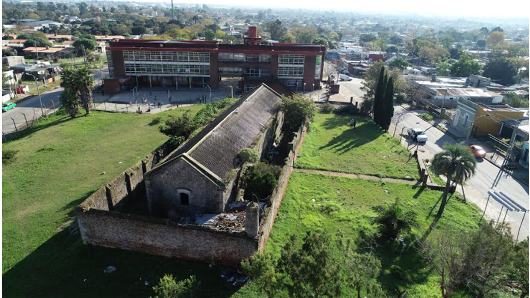
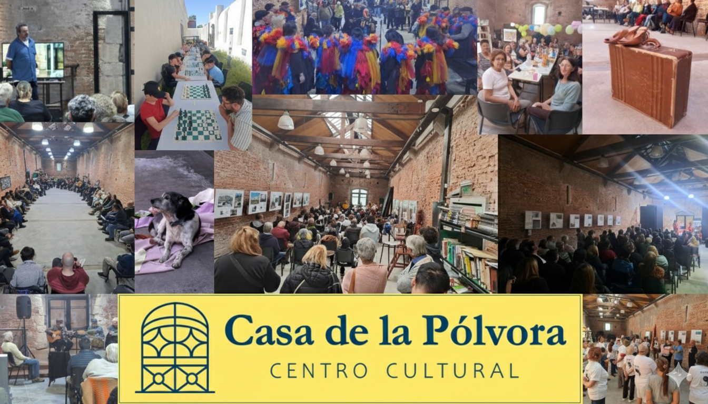

El Polvorín estaba en ruinas, abandonado a su suerte. Los ocupantes ilegales lo habían convertido en una suerte de caserío precario.
Los niños y niñas del barrio desafiaban sus miedos, jugando en el predio. Pero una edificación del año 1794, que “sobrevivía” en esas condiciones en pleno siglo XXI, debía ser necesariamente resiliente.
Es así, que en el año 2015 un grupo de alumnos y maestras de la escuela lindera presentan al alcalde del Municipio A un proyecto para convertir aquel lugar cuasi fantasmal en un centro cultural.

Gabriel Otero, alcalde de ese momento, acompaña la idea y se inicia un proceso de restauración patrimonial y recuperación del Polvorín, para convertirlo en la Casa de la Pólvora; ese hermoso lugar que los vecinos de la Villa del Cerro, del Casabó y de todo Montevideo disfrutamos hoy.
El resto de la historia y los pormenores de la restauración, los relatan la arqueóloga Ana Gamas y el arquitecto Sergio Padilla en su trabajo:
“Rescate patrimonial desde la comunidad, en un entorno urbano y periférico: El almacén de la pólvora del Cerro de Montevideo, Uruguay” (2022)
Puede acceder al documento completo aquí: Enlace al trabajo académico.
La realidad actual del centro cultural
La Casa de la Pólvora es hoy un punto de encuentro para vecinos y vecinas, un espacio donde día a día construimos y reconstruimos comunidad desde la cultura. Esta realidad se refleja en las distintas secciones de este sitio web.
El concepto de cultura que anima el trabajo cotidiano del centro es que las personas sean protagonistas de la construcción de su propia cultura. Podemos ser espectadores, actores, escritores, murguistas; pero, sobre todo, sujetos que participan activamente del proceso cultural del que forman parte.
